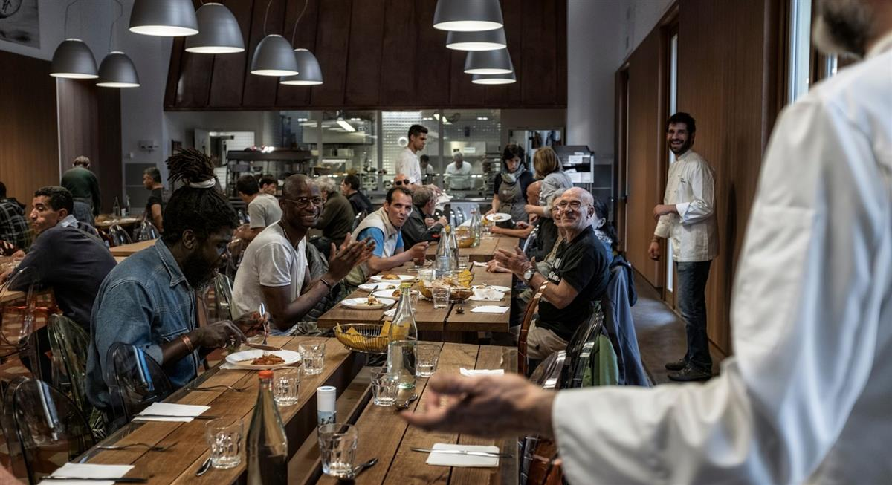
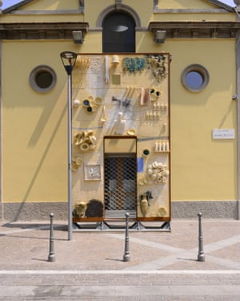
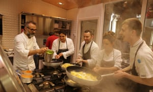
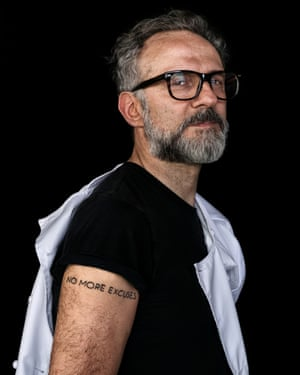

The Italian is one of the finest chefs in the world. But his greatest achievement is Food for Soul, his project to feed the poor and cut food waste, now about to open in London
Massimo Bottura is running late. You imagine this is probably a perennial condition. In the previous week, as I know from various emails, the man who was in 2016 voted the number one chef in the world, has been in Tokyo, Melbourne and London, returning between each trip to cook at Osteria Francescana, his three Michelin-starred restaurant in the northern Italian city of Modena.
Today, we are due to meet at the site of another of his other culinary projects: Refettorio Ambrosiano, in Milan, but texts and phone calls inform me that the chef is held up in traffic on the autostrada through Emilia-Romagna. He will be here in an hour or so. The delay gives me the chance to mooch around the site of Refettorio, which is in Greco, one of the poorest quarters of the city.
Refettorio began as a pop-up concept for the Milan World Expo in 2015. As the resident genius of north Italian food, Bottura, 54, had been invited to cook for various official functions, including the grand opening. Instead he decided to make a different kind of gesture about Italy’s greatest export, its hospitality. The original plan was to create a kitchen at Milan’s central station, in which some of the world’s greatest chefs would be invited to cook alongside him for the city’s homeless, using food deemed unsuitable for vle in supermarkets, making a statement about waste, and about taste. At the time, the station was overflowing with refugees journeying north from the southern ports. It was, by Bottura’s account, the Pope who changed his mind about the venue.

Massimo Bottura (far right) says hello during service at Refettorio Ambrosiano. Photograph: Per-Anders Jorgensen for the Observer
Through the Catholic charity Caritas, Bottura’s idea reached the Vatican. Pope Francis wondered if it might become a more sustainable gesture. Why not site Refettorio in one of the blighted quarters on the city’s periphery? He put Bottura in touch with the parish priest in Greco, Don Giuliano, who suggested a derelict theatre next to his church as a venue, and an unlikely partnership was born – one which has led to a full-time commitment to serve Greco’s homeless and refugee population every day. Bottura has also set up a foundation – Food for Soul – to seed the concept in other cities; he began with the creation of the Refettorio Gastromotiva in Rio for the Olympics, which continues to thrive. His next stop, next month, is a Refettorio in London. In the week before Easter, the week I was in Milan, Food for Soul received an initial grant of $650,000 from the Rockefeller Foundation to bring at least two Refettorios to the US.
In the midday sunshine there is a sleepiness to the square around Don Giuliano’s church. A dusty corner cafe is empty; a couple of men check the ground around stone benches in search of cigarette butts. The church is surrounded on three sides by blocks of social housing in varying states of repair. The dual carriageway to the city centre, three miles south, runs through the arches of a train line. The place has something of the sense of a stage set waiting for its leading man.
When Bottura eventually arrives, leaping from a people carrier, stick thin – his recent book was entitled Never Trust a Skinny Italian Chef – he is all ciaos and hugs. He clutches me by the arm and launches straight into his vision for Refettorio, without drawing breath: “You cannot believe how this was!” he says. “This building had been empty for years! Full of rats! And some bad people here! Drug dealers! We brought light, we brought beauty and music and food, and all the bad people and negative things they slowly disappeared! Come, look, light!”
He leads me into his illuminated space. Refettorio Ambrosiano was a church hall, on the grandest scale, built around 1930, and mostly used for classical concerts and recitals before the appetite for such events dwindled along with the neighbourhood. Inside, Bottura heads straight for the kitchen for a quick appraisal of tonight’s menu – aubergine and courgette with mozzarella and parmesan, a cannelloni (the chefs are just rolling the pasta), raspberry ice cream (from a mountain of glorious slightly overripe fruit that has just been delivered). After a brief exclamatory tasting he whistle-stops me around the room’s art work, the last supper mural on the wall, the 14 oak refectory tables, each one created by a different celebrated Italian designer, in a spirit of one-upmanship. And while he walks he is all the time explaining Refettorio.
Though it is far removed from his obsessive day job at Osteria, he believes the two places are linked by a commitment to quality. Bottura’s restaurant in Modena, he says, has 52 staff producing food for 28 guests at lunch and dinner. Here, two chefs, seconded from one of the best new restaurants in town, have given up their day to cook at his direction for about a hundred homeless people; they are assisted by local volunteers. Food is donated by a supermarket – whatever is close to its sell-by date, or misshapen or damaged. The fridges and pantry are stocked with fish and vegetables and fruit, all waiting to be transformed by what Bottura calls “every chef’s key ingredient”: his mental palate.
We go out around the back of the Refettorio, to sit in the sun on a bench by a school playground and talk. “Sit” is not quite accurate: Bottura is never quite still. Every minute or two he will get up and go through some stretches, like an athlete preparing for a final. Or he will jump up to greet and embrace anyone passing by, including Don Giuliano who is here to prepare for the following day’s Good Friday service. From time to time he will cheer on the kids who are booting a ball around the playground, or briefly join in with the game.
As a boy himself, in Modena, Bottura suggests he had a chance to make it as a footballer, but his father, who ran a successful fuel-supply business, insisted he studied for the law. Before Bottura finished his studies, however, in 1986, he heard that a roadside trattoria was for sale on the outskirts of Modena. He bought the building for next to nothing, renovated it, and opened Trattoria del Campazzo, his first restaurant, a week later. Having been denied the chance to follow his first passion, he was determined it would not happen again.

The entrance to Refettorio Ambrosiano. Photograph: Per-Anders Jorgensen/Emanuele Colombo
“Every single person in Modena said I would stay six months at this and then maybe become a mediocre lawyer,” he recalls. “But I knew I had not to disappoint my mum. She was fighting for me with my father: ‘Let him do it!’ I couldn’t let her down …”
The inspiration for Food for Soul, he suggests, also passes down the maternal line. “This reflects the way I grew up, the values that my mum and my grandma gave me,” he says. “I come from a place, Emilia-Romagna, that is extremely social, and that expresses itself in food. We know that by ourselves we cannot make it. That spirit is in the Parmigiano Reggiano Consortium, hundreds of small-scale cheesemakers who see the power of working together with a single voice. Or if you think about Modena and balsamic vinegar, with that collective spirit the vinegar has become a world icon. I come from a place that is devoted to sharing quality ingredients and to ideas.”
The ideas part of that equation is something that Bottura has developed in his restaurant in conjunction with his American wife Lara Gilmore, who he met in 1993 when she was an actress in experimental theatre, and introduced him to New York’s avant garde. He credits her with supporting him through his apprenticeship (he worked in part in Monte Carlo with Alain Ducasse) and in indulging his imagination at Osteria. Gilmore also helped him to realise that it was time – having won every possible accolade for his cooking (Osteria remained in the top three Best Restaurants in the World this year, dropping to number 2) – to spread his talents further.
“Lara understands the possibility of culture,” he says, “that the role of the chef is much more than the sum of his recipes.” This understanding began to become a primary focus for Bottura in 2012 when, after the two major earthquakes in Emilia-Romagna, 360,000 wheels of Parmigiano Reggiano cheese were damaged. The consortium asked if he had an idea how they could save the industry. Bottura created a risotto recipe involving a great deal of Parmigiano Reggiano and promoted it through the Slow Food movement. “The recipe spread so far in the world that in three months we had sold all the 360,000 wheels of parmesan, not one job was lost, no cheesemaker closed his doors. It is a recipe as a social gesture,” Bottura says.
Bottura sees Food for Soul, which he believes can become a worldwide movement to combat waste and to feed the hungry, as part of the same gesture. To begin with, the people of Greco, Milan, were not convinced. When Bottura announced plans to open his kitchen there were some protests from local residents who believed the initiative would only encourage addicts and refugees to congregate in the square. A march was organised.
When the protesters saw the commitment of architects and artists as well as chefs to transforming the area, though, many of them were converted; several now act as volunteers. The principle of Food for Soul is inclusiveness, Bottura says, but also a kind of joy at life. He didn’t want to create a utilitarian soup kitchen. He wanted a place where people whose lives were all about being shut out could have at least one hour in a day when they could “enjoy the pleasure of a beautiful meal in a beautiful place”. To begin with, Bottura says, Refettorio’s “customers” – who are invited as part of a social programme for three months at a time – were suspicious. “People didn’t even look in your eyes. They came in, ate in 20 minutes and left immediately.” However, after a month they understood that Bottura and his team were not going away. “We knew we were being accepted when they started complaining,” he says, with a smile. “No more soup! We want pasta!’”
A Canadian film crew followed the project for seven months last year, and documented the lives of some of the people who came to Refettorio in a film, The Theater of Life. People who had lost their homes through redundancy or illness were joined by refugees from Libya and Senegal. “It was slow to start with,” Bottura says, “but they started to integrate and create a bit of a family around the tables.”
If anything, his attempt to create the same spirit at the Refettorio in Rio was harder to execute. He pulls up his sleeve and shows me a tattoo he had inked in a parlour off Copacabana. The words read: “No more excuses”. He plays me a video on his phone showing how the place he had been given by the city authorities looked five days before opening, when some of the world’s starriest chefs were due to arrive. The Refettorio appears to consist of a single empty concrete shack, in which various local volunteers are asleep or playing football. “I had come straight from Osteria,” Bottura recalls. “I started shouting about how little time we had.” That didn’t help. So he took a walk with his daughter on the beach to clear his mind. It was then he saw the tattoo parlour, and the phrase came into his head. “When I went back I started dividing the team: these will clean, these will do vegetables, these will do fruit …” He shows me another video clip of the kitchen coming together. I can hear a little bit of panic in his voice on the audio. “Again it was this very challenging place,” he says. “When you shine a light, bad people don’t like it. We had a couple of times where they came and put guns to our heads and stole computers and telephones, so we knew we were in the right place, but we were open every night. The food was amazing.” He is proud to report that it remains so.

Massimo Bottura with Mirazur’s Mauro Colagreco (second left) and other chefs at Refettorio Ambrosiano. Photograph: Pers-anders Jorgensen/Emanuele Colombo
Somewhat sadly, Bottura says that one reason he has chosen to bring Food for Soul to London – in conjunction with the Felix Project, a food waste charity – is the perception that Britain has become somewhere that wants to close its doors to the homeless, to refugees. When the opportunity arose his first thought was, “It is important we do this at the moment of Brexit!” Britain has become part of this idea “that says we don’t care if you are being bombed in Syria, stay and die there”, he suggests. “In Italy, the way we were raised, we see people in trouble and we do what we can. Britain has always had that spirit too. Where has it gone?”

Massimo Bottura. Photograph: Per-Anders Jorgensen for the Observer
He aims in this sense, with the help of a roster of 30 eminent chefs (that includes Ducasse, Sat Bains, Michel Roux Jr, Claude Bosi and many more) to bring a little light and break some decent bread with a hundred or so of the less welcomed residents of Earl’s Court each night.
He looks forward to the challenge of creating his British menus as much as anything, working with what comes through the door each day, spreading the Italian tradition of cucina povera, make do and blend. As we head back inside to prepare for that night’s service he is full of talk of a rice and pumpkin soup he created here recently, from the previous day’s risotto, with the addition of some ginger, the softened crust of parmesan and some leftover herbs.
At 6pm the earliest punters begin to file into Refettorio and take up their regular seats. Along with his volunteer team, Bottura serves them their three courses, chatting to regulars and watching their reactions, hearing the popular complaint that though very tasty the portions could be a bit more generous. The three-star chef goes in search of seconds, and then thirds. The diners are uniformly wary of talking to an English reporter, but not, it seems, to each other. Several stay long after their plates are cleared, chatting, before wandering back to the Caritas hostel where most will sleep. Bottura shakes hands and slaps backs. And then, service over, at 7.30pm, he cheerfully heads back to his other kitchen an hour and a half down the road in Modena, where his night shift will begin
Refettorio Felix opens in the St Cuthbert’s Centre, London SW5 in June; foodforsoul.it
SOURCE: The Observer